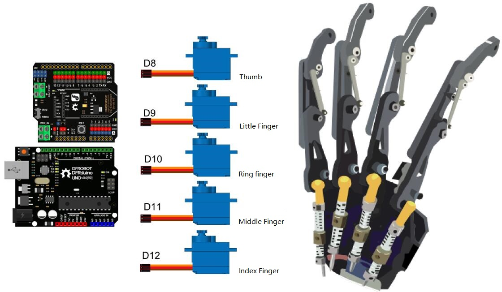
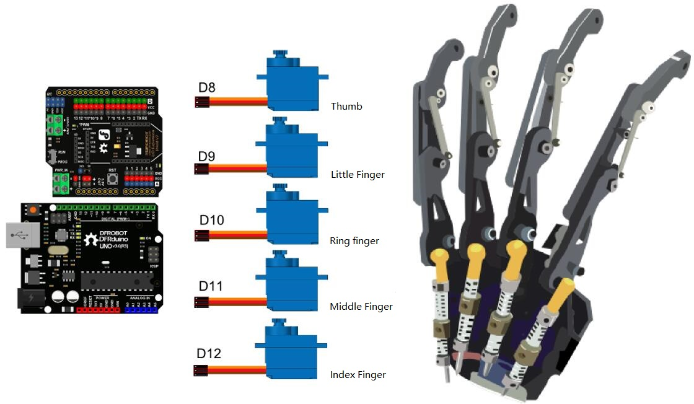

Arduino.Make
Bienvenue sur Arduino.Make, ici je poste mes projets Arduino. (Voir plus)
Vous avez ci-dessous les étapes pour fabriquer une main robotique avec Arduino :
| Étape I | Étape II | Étape III |
|---|---|---|
|  | ||
| Étape IV | Étape V | Étape VI |
.jpg) |

| Étape I | Étape II | Étape III |
|---|---|---|
|  | ||
| Étape IV | Étape V | Étape VI |
|